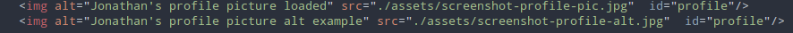
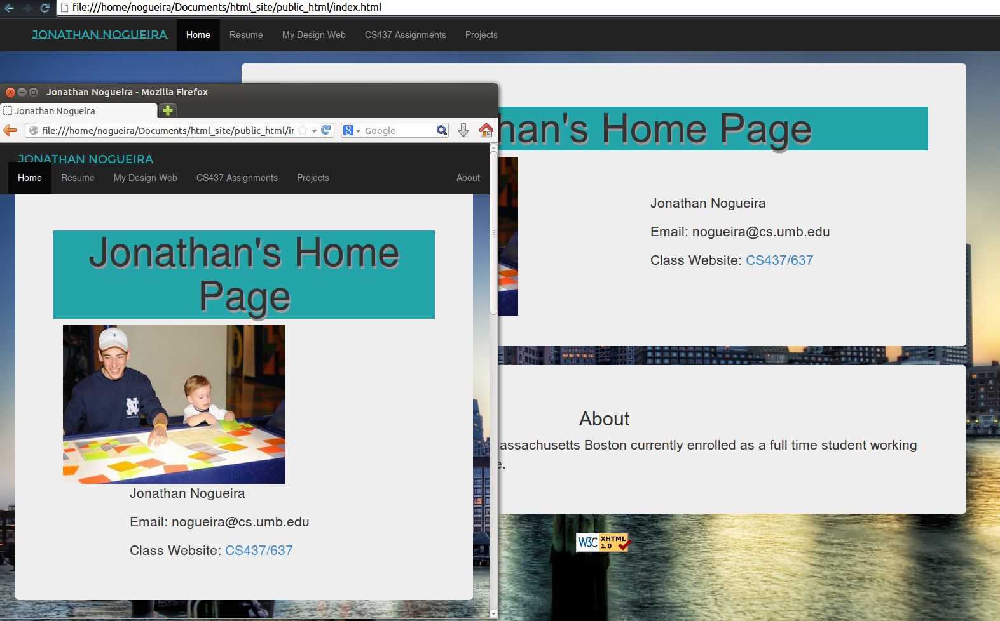

-
meta ALT tags:
I add alt tags to images to make my site more accessible. This helps those who have visual impairments. Also this protects against broken links.

-
Mobile Devices:
To make my site easier to view on smaller devices I added a setting to my css file in order to make the page resize on smaller devices such as mobile phones.

Site Style:
The site's styling I wanted to keep clean by adding colors that would show up clear on background. All the styling is done in separate css files to keep things modular.
|